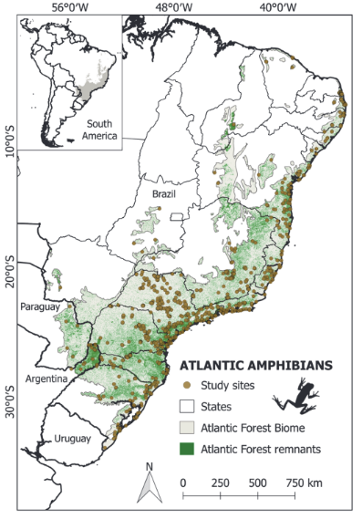

ATLANTIC AMPHIBIANS: a data set of amphibian communities from the Atlantic Forests of South America
Compilamos comunidades de anfíbios ao longo do Bioma da Mata Atântica

Resumo
Amphibians are among the most threatened vertebrates in the world and this is also true for those inhabiting the Atlantic Forest hotspot, living in ecosystems that are highly degraded and threatened by anthropogenic activities. We present a data set containing information about amphibian communities sampled throughout the Atlantic Forest Biome in South America. The data were extracted from 389 bibliographic references (articles, books, theses, and dissertations) representing inventories of amphibian communities from 1940 to 2017. The data set includes 17,619 records of 528 species with taxonomic certainty, from 1,163 study sites. Of all the records, 14,450 (82%) were classified using the criterion of endemism; of those, 7,787 (44%) were considered endemic and 6,663 (38%) were not. Historically, multiple sampling methods were used to survey amphibians, the most representative methods being active surveys (82.1%), surveys at breeding sites (20%), pitfall traps (15.3%), and occasional encounters (14.5%). Species richness averaged 15.2 ± 11.3 (mean ± SD), ranging from 1 to 80 species per site. We found a low dominance in the communities, with 10 species occurring in about 26% of communities: Physalaemus cuvieri (4.1%), Dendropsophus minutus (3.8%), Boana faber (3.1%), Scinax fuscovarius (2.8%), Leptodactylus latrans (2.7%), Leptodactylus fuscus (2.6%), Boana albopunctata (2.3%), Dendropsophus nanus (1.6%), Rhinella ornata (1.6%), and Leptodactylus mystacinus (1.6%). This data set represents a major effort to compile inventories of amphibian communities for the Neotropical region, filling a large gap in the data on the Atlantic Forest hotspot. We hope this data set can be used as a credible tool in the proposal of new studies on amphibian sampling and even in the development of conservation planning for these taxa. This information also has great relevance for macroecological studies, being foundational for both conservation and restoration strategies in this biodiversity hotspot. No copyright or proprietary restrictions are associated with the use of this data set. Please cite this data paper when the data are used in publications or teaching events.
Citação
@article{vancine_etal_2018,
title = {{ATLANTIC} {AMPHIBIANS}: a data set of amphibian communities from the {Atlantic} {Forests} of {South} {America}},
volume = {99},
issn = {00129658},
shorttitle = {{ATLANTIC} {AMPHIBIANS}},
url = {https://onlinelibrary.wiley.com/doi/10.1002/ecy.2392},
doi = {10.1002/ecy.2392},
language = {en},
number = {7},
urldate = {2022-06-07},
journal = {Ecology},
author = {Vancine, Maurício Humberto and Duarte, Kauã da Silva and de Souza, Yuri Silva and Giovanelli, João Gabriel Ribeiro and Martins-Sobrinho, Paulo Mateus and López, Ariel and Bovo, Rafael Parelli and Maffei, Fábio and Lion, Marília Bruzzi and Ribeiro Júnior, José Wagner and Brassaloti, Ricardo and da Costa, Carolina Ortiz Rocha and Sawakuchi, Henrique Oliveira and Forti, Lucas Rodriguez and Cacciali, Pier and Bertoluci, Jaime and Haddad, Célio Fernando Baptista and Ribeiro, Milton Cezar},
month = jul,
year = {2018},
pages = {1692--1692},
}